DIY DAS and NAS for Media 2020
Updated for 2021 !!!

Update: I’ve recently added a Thunderbolt 3 PCIe card for easy 40 Gbps connectivity.
Why another NAS/DAS article?
There are a lot resources online for building your own DIY DAS. A lot of them contain good information but none of them were comprehensive for the DAS I wanted to build so I compiled the information that was useful for my specific 2019 build here. The prices linked below are subject to market fluctuations and timing, so some of the components I found at a great price. Overall they should be roughly the same as what you can find. Your mileage may vary.
What is DAS?
Direct attached storage, sometimes referred to as a Disk Shelf. Enterprise versions exist, such as the Dell MD1200. They basically consist of a hot-swap disk caddies, power supply and SAS expander. It’s basically a separate case designed for holding disks: a lot of them. The DAS I built here is being used for media storage, so I don’t focus on performance features like you find with RAID.
My DAS Requirements
I wanted the following for my DAS:
- Quiet (controllable by software or manual fan control); this is in contrast to the MD1200 which is a great out of the box DAS, but I wasn’t able to silence it easily.
- Expandable - Using SAS Expanders allow me to upgrade a single component to add more storage or increase performance. The cascadable nature of SAS allows me to link more units together
- Hot-swap bays - I wanted to be able unmount and remove disks without having to power down and open the case.
- Flexibile
- Ability to install motherboard or just use as JBOD DAS
- Optional PCIe cards:
- 10GBe Ethernet
- Thunderbolt / USB 4
- M.2 PCIe adapter cards
- Future expansion
- Low to moderate cost
- Ability to buy components and build over time rather than single large up front cost
- Can price components based on budget
The Chassis

I was just window shopping on eBay when I stumbled across a Supermicro 836A chassis for a really good price. When I get an idea for a project, I’ll usually research it a bit and just stew on the idea for a while before actually doing it. The chassis and the price ($142 USD) were right, so I purchased a pair of them. 32 disk bays (16 each) will house my existing disks and give me room for expansion.
There are several SATA ports on the back of the backplane in a 1:1 ratio. For each disk bay, there is one SATA port to the disk and another on the back of the backplane. These connect to the HBA via SAS->SATA breakout cables “whips” (more on that later).
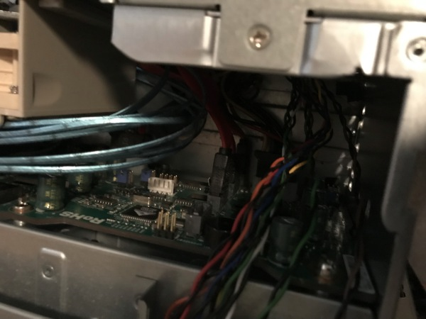
Note: If you’re shopping for this chassis, pay attention to the backplane. Preferably, you’ll want one with SATA passthrough (TQ) or (A) backplanes. Avoid a BPN-SAS-EL1 or BPN-SAS-EL2 backplane because they’re slow. If you get one, you can replace it with an 836A or 836TQ backplane for around ($25 USD)
SAS, SAS2, SAS3 and SAS4 – whaaa?
Similar to SATA, newer SAS versions have increased bandwidth along with other improvements to the specification. The original SAS specification allowed for total bandwidth of 1.5Gbit/s. This translates to 187.5 MB/s (megabytes per second). This is fine for maxing out a single read/write to a single spinning disk (most top out at 125MBs), but with a dozen or more disks, this much bandwidth becomes a bottleneck (especially if RAID is involved). The next SAS specification, SAS2, is currently (as of 2019) the best price/performance ratio (value) for a homelabber or computer hobbyist.
SAS stands for Serial Attached SCSI
SAS-1: 3 Gbit/s (2005)
SAS-2: 6 Gbit/s (2009)
SAS-3: 12 Gbit/s (2013)
SAS-4: 22.5 Gbit/s (2017)
Approximate SAS backplane prices 2019:
SAS-EL2 backplane ~ $20 USD
SAS2-EL2 backplane ~ $400 USD
SAS3-EL2 backplane ~ $550 USD
SAS4 SAS backplane ~ $1000 USD
Backplanes
A backplane is essentially the board that disks plug directly in to in a server chassis. Some backplanes have a SAS Expander built in (like the Supermicro SAS-ELx Series) and some are just physical passthrough (with some basic circuitry for power and hot swap capability).
The Supermicro Backplanes use the following numbering convention
SAS: SAS, SAS2 or SAS3
EL: 1 or 2 (the number of SAS input channels that can be used for redundancy or cascading to other DASes)
8x6: 2 3 or 4. These seem to match the number of Rack “U”s of the chassis. The 16 disk chassis I used are 3U (3 units tall), so the matching backplane is 836.
Putting it all together

The first thing I noticed when the Chassis’ arrived is that it’s longer than I thought. If you’re planning on putting this DAS under your desk or somewhere similar make sure to accomodate for the depth. It’s longer than an MD1200 and roughly the same length as a Dell R710/720 server.
The next major observation was a clear internal airflow dam. I discarded it for the DAS since there is no CPU or RAM to cool. I may reinstall it anyway because it helps with the airflow / thermodynamics, specifically the static pressure diferential between the front and rear fans.
Installing the HBA in the host computer
(If you already have an HBA with external SF-8088 ports, you can skip this section)
The HBA just presents disks to the operating system as JBOD (Just a Bunch of Disks). It’s similar to a RAID controller in that it connects a lot of disks to a computer/server using similar connectors, but that’s about where the similarlities end. You can read more about the differences between a RAID controller and an HBA here.
The HBA that I’ve found the best value with is the Dell H200E 6GB SAS PCI-E HBA (H200e is a variant with external 8088 SAS ports). It has a good balance between performance and price (~ $35 USD in 2019). For media storage, which only streams at a few hundred megabits per second, it works fine.
The H200 allows you connect up to 192 disks to a computer using a single 8x PCI slot. It’s a SAS2 controller, so it’s throughput is limited to 6Gbps (750 MB/s) - more than sufficient to stream media.
How can you connect 192 disks?!?
The H200e provides 2 SAS ports. We’ll connect these ports to our DAS using a SAS Adapter 2X Internal SFF-8087 to 2X External SFF-8088 Slot. This bracket fits in a case PCI slot, but doesn’t require a motherboard PCI connection for data or power. It’s simply a cable adapter.
The internal connections of this adapter connect to our SAS Expander using SAS Cables.
The DAS is surprisingly empty. Just 2 PCIe cards, JBOD module, PSU and disks:
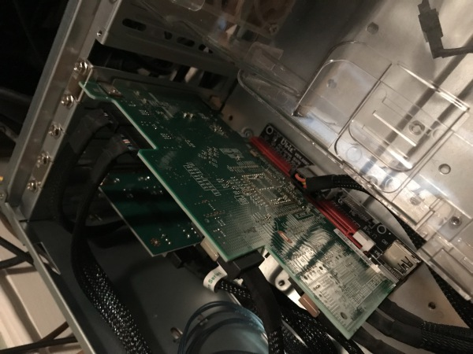
Assembling the components
JBOD board lifter for supermicro chassis
- Had to hack
- If someone knows of the threading or a source for the standoffs, please comment below
- I had rack mount screws and they were a good thread fit, but they were too tall. Additionally, they’re wider than the screw holes on the JBOD board, so I drilled them out slightly, but within the screw ring on the circuit board.
- Used heat shrink tube to rise the board up
- Cut slightly smaller than screws.
Parts List
Case / Enclosure
Supermicro CSE-836 EEATX Server Chassis
Power Supply
(optional, very quiet; depends on Chassis purchase)
Supermicro PWS-1K28P-SQ 1280W ($18 USD)
SAS Expander(s)
This part is where the magic happens. Standalone SAS2 Expanders are relatively cheap these days, particularly when compared to buying a replacement backplane that has the SAS Expander built in ($400 USD). The SAS Expander I use is the IBM 46M0997 ServeRAID Expander. I paid about $26 dollars for a used one on eBay.
One of the big benefits that SAS has over SATA, is that disks can be added in series and DAS devices can be cascaded together. A SAS expander can either be built in to a backplane or a standalone card (often a PCI card). The PCI form factor is very convienent because it provides power and a mounting bracket. Powering the SAS expander without a motherboard can be accomplished using a Powered Riser Adapter Card. The SAS Expander plugs into the PCI Slot on this board. It can be powered via the 8-pin ATX Molex connector or by a 4-pin Molex disk power connection.
Dell H200
This is the internal HBA. It plugs into a PCIe socket on the motherboard of the NAS. It connects to the backplane of the chassis and connects to 8 of the disk caddies.
Dell H200e
This is the PCIe HBA that provides 2 external SAS ports. The two external SAS ports connect to the DAS chassis. The DAS chassis provides another 16 disk bays. The DAS doesn’t have a motherboard, it uses the JBOD adapter below.
JBOD DAS Module
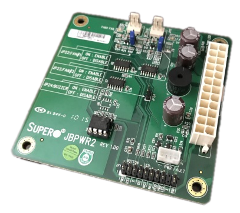
JBOD power board version 1: $55
This board mounts in the DAS chassis where a motherboard would typically be. It provides power and connections to the backplane and SAS expander in the DAS.
Molex power extension (waste, could’ve used the 8 Pin power supply pin; oh well):
Cables
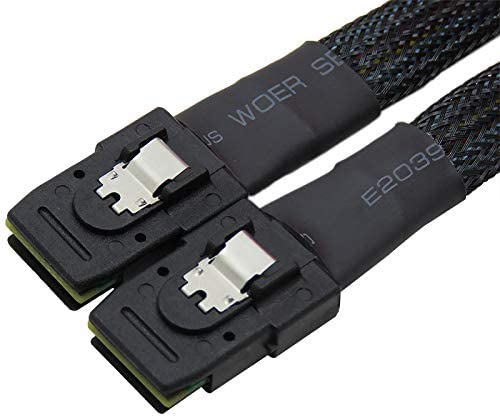
SAS to SAS internal
8088 external to external (qty 2): SAS SFF-8088 Adapter - This provides the inputs to the DAS from the HBA in another computer/server
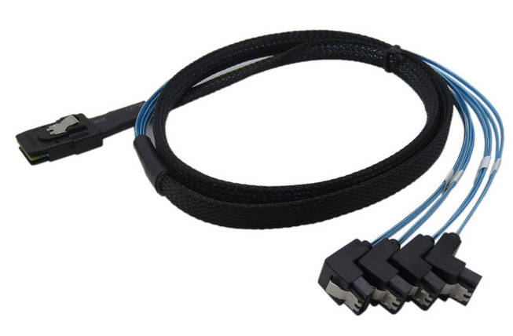
SAS - SATA whip cables (qty 4) - 1 cable occupies a single SAS port and provides 4 SATA connectors. This cable is specifically for the BPN EL1 backplane I posted above. If your backplane is SAS, you will need an appropriate SAS cable. The SATA connectors are on the blue wires connected to one SAS connector on the other end.
Disks
You can use existing disks or for an affordable new option, removing the WD EFRX disks from the WD Easystore or WD Elements external disk enclosures is a great affordable option. Best Buy (USA) often has great sales on the WD Easystores.
Optional Upgrades / Components
Fans
Noctua Fans quantity 5 (they include 50% reducers to lower the fan speed noise)
Misc
Cable to connect to chassis power switch and leds
Supermicro Screws
Total Cost (without disks)
Supermicro Chassis - $142 + $40 Shipping = $182
Dell H200 - $36
Dell H200e - $40
PWS-1K28P-SQ Supermicro 1280W Power Supply - $50 x2 = $100
IBM 46M0997 ServeRAID SAS Expander - $20
Supermicro JBPWR2 Rev 1.00 JBOD Module - $45
SAS to SAS Cable - $10 x2 = $20
Two Ports Mini SAS SFF-8088 To SAS - $25
Mini SAS 36P SFF-8087 to 4 SATA - $10 x4 = $40
Supermicro CBL-0068L (optional; provides connection from leds and power switch to JBOD module in DAS) - $25
Supermicro Screw Bag (optional) - $5
Noctua NF-A8 PWM, Premium Quiet Fan (optional) - $16 x5 = $80
Total: $618 USD
(This price assumes you already have a NAS with available PCIe slots for the HBAs to connect to the DAS)
Final Notes / Considerations
Power must stay on if in a RAID and used with another server/computer. I highly recommend connecting the DAS to a UPS. This Chassis has Dual redundant power supplies, but I found it’s worth it to upgrade the PSU to the SQ (Super Quiet) models for approximately $18 USD.
Pictures
The Direct Attached Storage (DAS):
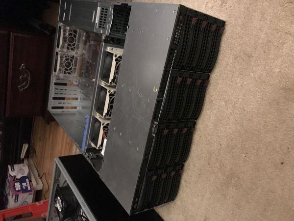
The Network Attached Storage (NAS) and DAS together (two top units):
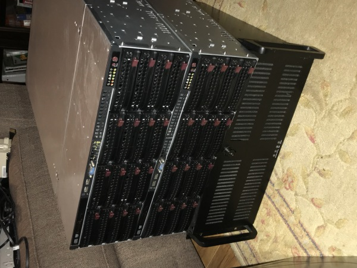
The SAS PCI bracket is how I connect the DAS to the NAS.
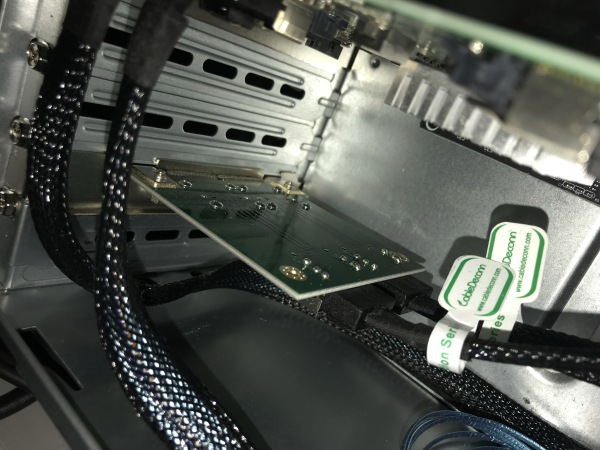
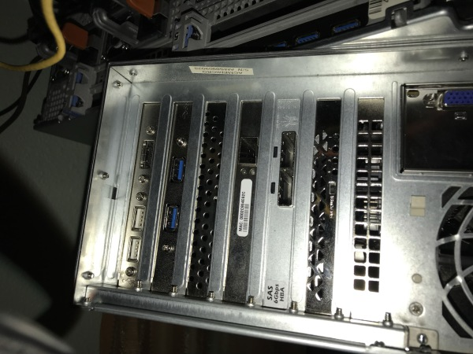
The DAS Chassis is mostly empty. The only components are the JBOD module, a USB/PCI power board, a PCI SAS bracket, PSU and several disks.
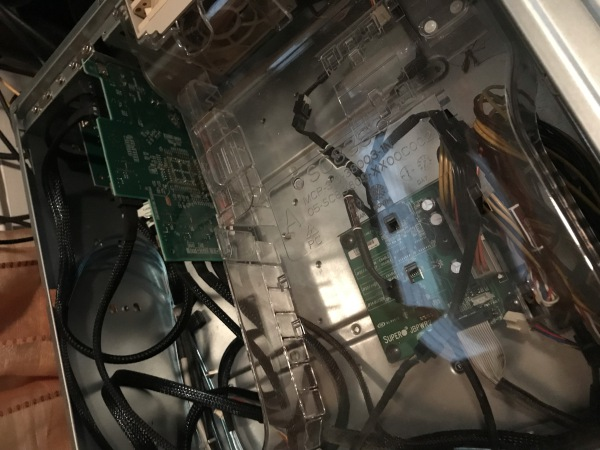
I put 8 Samsung 1TB Evo SSDs in a RAID6 array in the DAS.
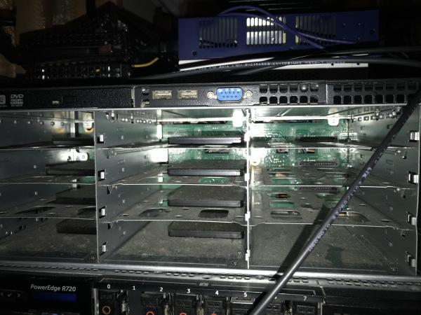
I upgraded the fans in the NAS and DAS chassis to Noctua NF-A8 Premium Quiet fans. This is an optional step, but it makes a nice difference.
The empty DAS chassis:
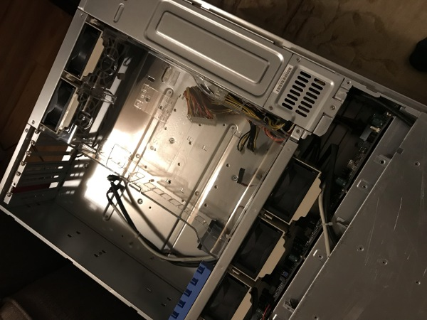
The populated DAS chassis:
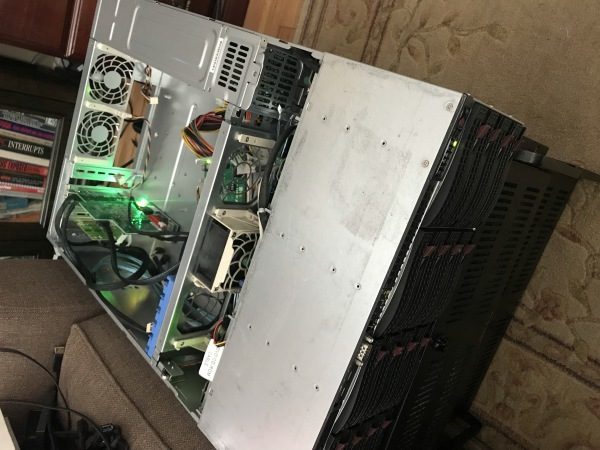
The DAS powered on at night:
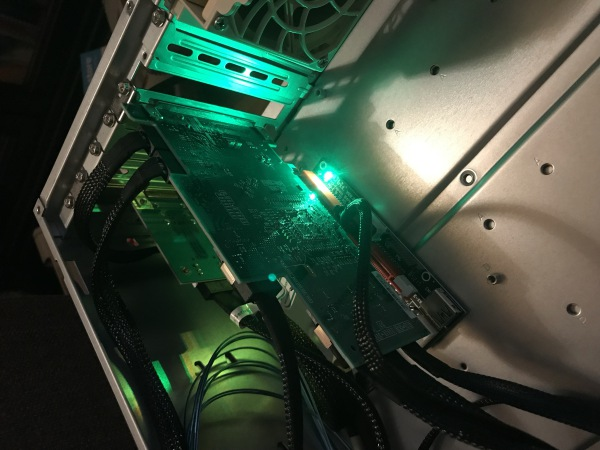
NAS Internals:
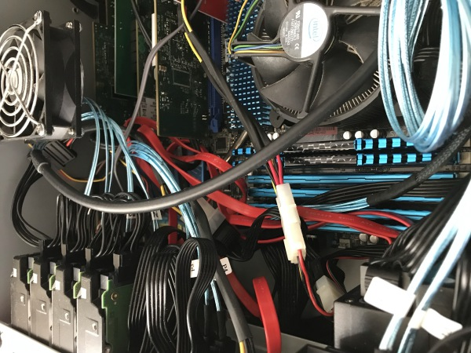
JBOD Module to power the DAS:
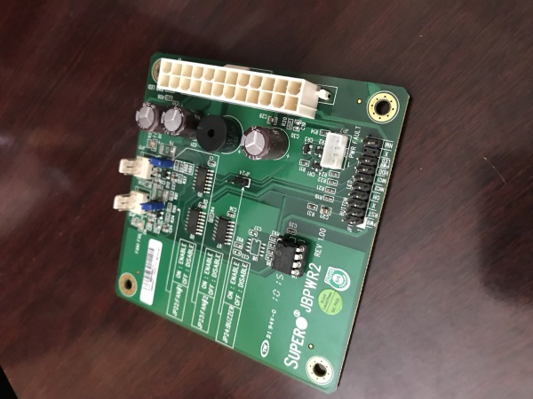
External cable connecting the NAS to the DAS:
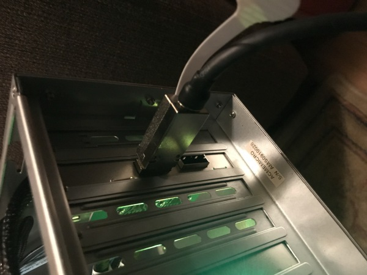
FAQ / Frequently Asked Questions
Does the H200 work with disks larger than 2TB?
- Yes - However, it may require flashing the firmware to a newer version. These days most of the units I’ve found on eBay already have a recent firmware version.
Do I have to use more expensive SAS disks for this?
- No. SAS is backwards compatible with SATA. You can use a SATA disk in a SAS enclosure, but you cannot use SAS disks in a SATA enclosure / port.
Do I have to use a SuperMicro Chassis / Case to make a DAS?
- Nope. You can use any computer case that provides disk bays and exposes SATA ports from the disks. One of the major draws of using a DAS is the hot-swap capability, but using a high density disk chassis without hot-swap will work.
Can I install an HBA if I just want to add more SATA ports to my computer?
- Yes. HBAs provide higher density than SATA expansion cards because they typically use SAS ports and breakout to SATA via 4 to 1 adapter cables. Often for the same price of a SATA Expansion card, you can add an equivalent HBA with more options for future expansion.
Resources / Further Reading
This is a really good (albeit old) article about DAS, SAS Expanders and JBOD.
Acronym Reference
- NAS - Network Attached Storage
- DAS - Direct Attached Storage
- HBA - Host Bus Adapter
- SAS - Serial SCSI
- SATA - Serial AT Attachment
- JBOD - Just a Bunch Of Disks
- RAID - Redundant Array of Inline Disks
- SSD - Solid State Disk
- EEATX - Enhanced Extended Advanced Technology eXtended
DIY DAS and NAS for Media 2020